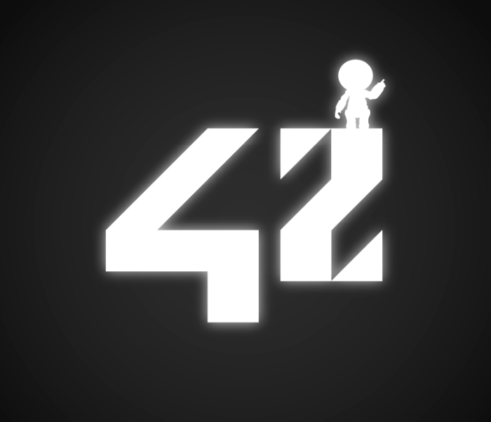
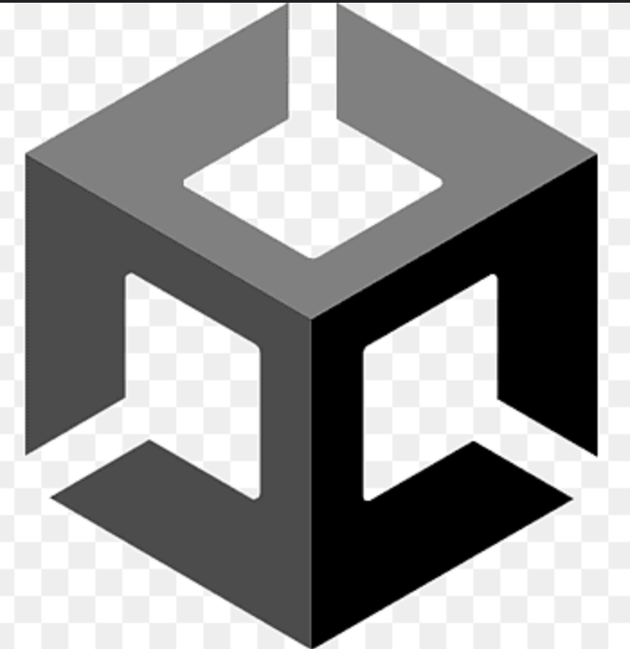
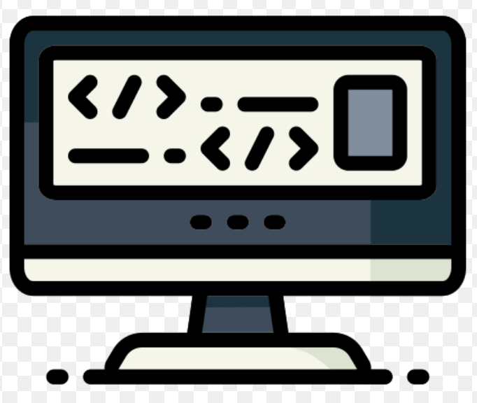
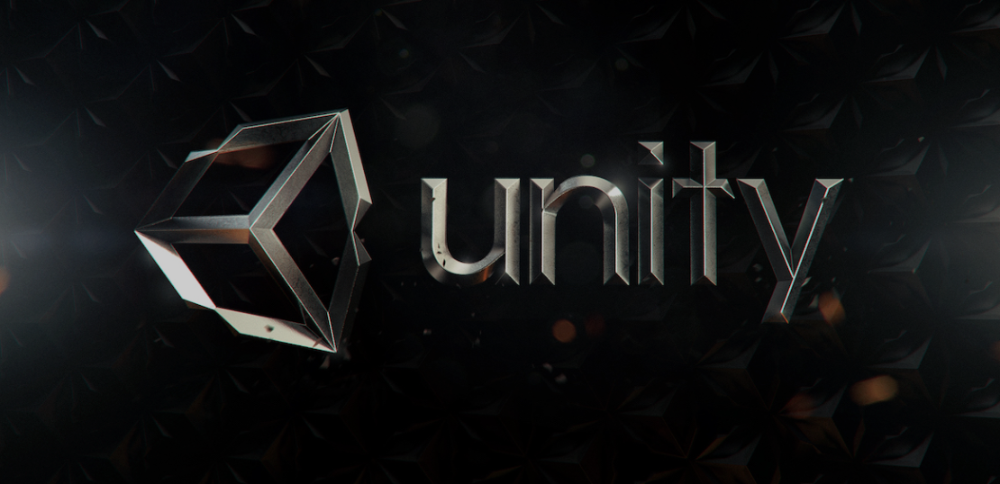

Mon experience
 Etudiant a 42 lyon
Étudiant à l'école 42, je suis passionné par l'informatique et dévoué à l'apprentissage continu, développant des compétences en programmation et en création de solutions innovantes.


 Game Developer
En tant que passionné de jeux vidéo, je combine créativité et compétences techniques pour développer et concevoir mes propres jeux.
 Compétences Techniques
Description de la troisième carte.
Mes Projets

Aria and the Lost Souls
Dans ce platformer, vous incarnez Aria, une héroïne courageuse en quête des âmes perdues. Ces âmes, sous forme d'armes puissantes, sont dispersées à travers différents niveaux, chaque niveau abritant une arme unique. Votre mission est de toutes les rassembler pour affronter Vespera, le grand méchant qui menace le monde et introduit l'histoire du jeu. (Appuyez sur l'écran pour lancer une vidéo du jeu.)
Projets
Au cours de mon expérience en tant qu'étudiant à l'école 42, j'ai eu l'opportunité de travailler sur plusieurs projets majeurs. Ces projets m'ont permis de développer mes compétences techniques et de renforcer ma capacité à collaborer efficacement avec d'autres personnes. Parmi les projets les plus significatifs auxquels j'ai participé Chacun de ces projets m'a offert des défis uniques et a contribué de manière substantielle à ma croissance professionnelle et personnelle.
Minishell est un projet de l'école 42 qui consiste à recréer un shell basique. Un shell est un interpréteur de commandes qui permet à l'utilisateur de communiquer avec le système d'exploitation. Le but de ce projet est de comprendre le fonctionnement d'un shell et d'apprendre à manipuler les processus et les signaux. Pour ce faire, j'ai dû implémenter plusieurs fonctionnalités, telles que l'exécution de commandes, la gestion des variables d'environnement, la gestion des signaux, la gestion des erreurs, etc. Ce projet m'a permis de renforcer mes compétences en programmation système et de mieux comprendre le fonctionnement des systèmes d'exploitation. Vous pouvez avoir un appercue de mon travail sur la video en haut a droite, a gauche vous avez mon travail et a droite vous avez le vrai bash.
Cub3D est un projet de l'école 42 qui consiste à recréer un moteur graphique en utilisant la bibliothèque graphique miniLibX. Le but de ce projet est de comprendre le fonctionnement d'un moteur graphique 3D et d'apprendre à manipuler les raycasting. Pour ce faire, j'ai dû implémenter plusieurs fonctionnalités, telles que le rendu d'une carte 3D, le déplacement du joueur, la gestion des textures, la gestion des collisions, etc. Ce projet m'a permis de renforcer mes compétences en programmation graphique et de mieux comprendre le fonctionnement des moteurs graphiques 3D.
So_long est un projet de l'école 42 qui consiste à recréer un jeu de type "Sokoban" en utilisant la bibliothèque graphique miniLibX. Le but de ce projet est de comprendre le fonctionnement d'un moteur de jeu en 2D et d'apprendre à manipuler les événements clavier et souris. Pour ce faire, j'ai dû implémenter plusieurs fonctionnalités, telles que le rendu d'une carte 2D, le déplacement du joueur, la gestion des ennemis, la gestion des objets, etc. Ce projet m'a permis de renforcer mes compétences en programmation de jeux vidéo et de mieux comprendre le fonctionnement des moteurs de jeu en 2D.
Push_swap est un projet de l'école 42 qui consiste à trier une pile d'entiers en utilisant un ensemble d'instructions prédéfinies. Le but de ce projet est de comprendre le fonctionnement des algorithmes de tri et d'apprendre à optimiser leur complexité. Pour ce faire, j'ai dû implémenter un algorithmes de tri, l'algorithme de tri "push_swap", et l'optimiser pour trier une pile d'entiers dans l'ordre croissant. Ce projet m'a permis de renforcer mes compétences en algorithmique et de mieux comprendre le fonctionnement des algorithmes de tri.
Philosophers est un projet de l'école 42 qui consiste à simuler le problème des philosophes dîneurs en utilisant des threads et des mutex. Le but de ce projet est de comprendre le fonctionnement des threads et des mutex et d'apprendre à les manipuler pour résoudre un problème de synchronisation. Pour ce faire, j'ai dû implémenter un programme qui simule le comportement de plusieurs philosophes dîneurs qui partagent des ressources communes (les fourchettes) et doivent éviter les situations de conflit (les interblocages et les courses critiques). Ce projet m'a permis de renforcer mes compétences en programmation concurrente et de mieux comprendre le fonctionnement des threads et des mutex.
Minitalk est un projet de l'école 42 qui consiste à créer un programme client-serveur qui permet de communiquer en utilisant des signaux. Le but de ce projet est de comprendre le fonctionnement des signaux et d'apprendre à les manipuler pour établir une communication bidirectionnelle entre deux processus. Pour ce faire, j'ai dû implémenter un programme client qui envoie un message à un programme serveur en utilisant des signaux, et un programme serveur qui reçoit le message et l'affiche à l'écran. Ce projet m'a permis de renforcer mes compétences en programmation système et de mieux comprendre le fonctionnement des signaux.